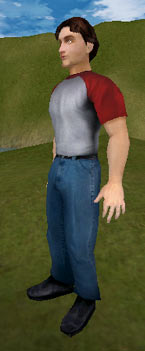
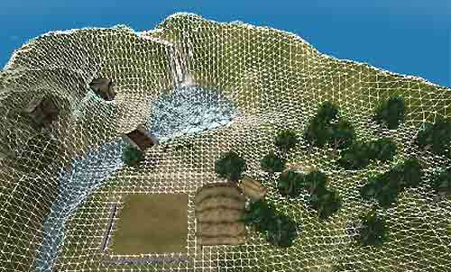
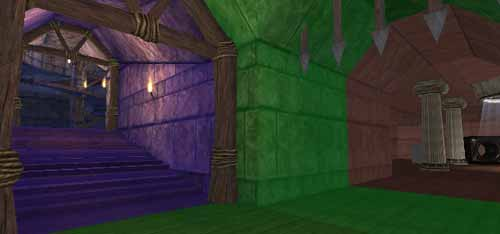
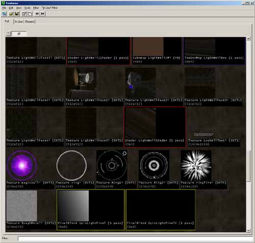
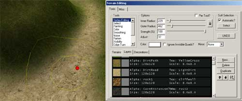
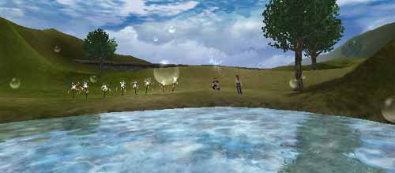

UDN
Search public documentation:
UnrealEngine2FeaturesMatineeKR
English Translation
日本語訳
Interested in the Unreal Engine?
Visit the Unreal Technology site.
Looking for jobs and company info?
Check out the Epic games site.
Questions about support via UDN?
Contact the UDN Staff
日本語訳
Interested in the Unreal Engine?
Visit the Unreal Technology site.
Looking for jobs and company info?
Check out the Epic games site.
Questions about support via UDN?
Contact the UDN Staff
Matinee 영화 속의 Unreal Ed
문서 요약: 이 문서에서는 Matinee 영화 (이 페이지에서 다운로드 할 수 있음)에서 소개된 Unreal Engine 의 일부 기능들을 강조하여 소개합니다. 문서 변경 내역: 작성 목적의 최종 업데이트 Jason Lentz (DemiurgeStudios?). 마티네 및 모델링에 대한 Tom Lin 의 협조에 감사드립니다. 원저자 Jason Lentz (DemiurgeStudios?).서론
이 문서는 이 페이지의 맨 아래 에서 다운로드할 수 있는 마티네 영화 (AVI 형식으로도 가능) 에 대한 지침서입니다. 마티네는 게임을 시작하면 실행되는 영화를 작성할 수 있도록 해주는, 게임 내 영화 제작 도구입니다. 이 문서에 포함된 마티네 영화는 Unreal 런타임 엔진의 다양한 기능들이 현실감 있고 매력적인 상호작용 환경을 만드는데 어떻게 사용될 수 있는지 보여줍니다. 이 문서에서는 여러가지 기능들에 대해 깊이있게 다루며, 이 기능들을 더 심층적으로 설명하는 문서로의 링크도 포함되어 있습니다. 이 기능은 Unreal Engine 2 의 최종 빌드를 기반으로 하는 UnrealEngine2RuntimeKR 에서 미리보기 할 수 있습니다. Unreal Tournament 2004 를 위해 추가된 기능들은 포함되어 있지 않습니다. Unreal Engine 의 기능들에 대한 보다 상세한 내용은 UnrealEngine2Features? 문서를 참고하십시오.도형의 타입
이 마티네 영화는 여러가지 도형 타입들의 예를 살펴보는 것으로 시작됩니다. Unreal Engine 에는 여러가지 도형의 타입이 있어서, 타입을 다양한 용도를 위해 최적화할 수 있습니다. 아래는 마티네 영화에서 나타나는 다양한 도형 타입들에 대한 간략한 설명입니다.정적 메쉬 (정적 도형)
 정적 메쉬 는 Unreal 에서 가장 일반적이고 광범위하게 사용되는 도형 타입입니다. 이것은 정적 도형에 대해 사용되도록 설계되었으며, 렌더링 시간이 빠르기 때문에 한 장면에 많은 수의 정적 메쉬들이 배치될 수 있습니다. 이것들은 대개 환경에 디테일 및 시각적 구조를 추가함으로써 장면에 살을 붙이는데 사용됩니다. 이 맵에서는 나무, 빌딩, 지하 지대로의 입구 및 지하 지대 내 장식의 상당 부분에 정적 메쉬들이 사용됩니다.
정적 메쉬는 또한 Mover (무버.키프레임된 위치들을 따라 이동할 수 있는 메쉬), DecoLayer (데코 레이어. 다음섹션에서 설명), 입자 시스템을 위한 입자, 뼈대 메쉬의 부착물 등 다른 여러 도형 타입의 기초로서 사용되기도 합니다.
정적 메쉬 는 Unreal 에서 가장 일반적이고 광범위하게 사용되는 도형 타입입니다. 이것은 정적 도형에 대해 사용되도록 설계되었으며, 렌더링 시간이 빠르기 때문에 한 장면에 많은 수의 정적 메쉬들이 배치될 수 있습니다. 이것들은 대개 환경에 디테일 및 시각적 구조를 추가함으로써 장면에 살을 붙이는데 사용됩니다. 이 맵에서는 나무, 빌딩, 지하 지대로의 입구 및 지하 지대 내 장식의 상당 부분에 정적 메쉬들이 사용됩니다.
정적 메쉬는 또한 Mover (무버.키프레임된 위치들을 따라 이동할 수 있는 메쉬), DecoLayer (데코 레이어. 다음섹션에서 설명), 입자 시스템을 위한 입자, 뼈대 메쉬의 부착물 등 다른 여러 도형 타입의 기초로서 사용되기도 합니다.
 Unreal Ed 내에 있는 StaticMesh 브라우저 (위 그림)는 StaticMesh 패키지의 다양한 라이브러리들을 사용할 수 있도록 하는것은 물론 해당 메쉬의 모든 인스턴스들의 속성을 바꿀 수 있도록 해줍니다.
Unreal Ed 내에 있는 StaticMesh 브라우저 (위 그림)는 StaticMesh 패키지의 다양한 라이브러리들을 사용할 수 있도록 하는것은 물론 해당 메쉬의 모든 인스턴스들의 속성을 바꿀 수 있도록 해줍니다.
데코 레이어 (지형에 첨부된 도형)
 이 도형 타입은 사실상 지형의 일부입니다. DecoLayers? 는 그 설정에서 정해진대로 지형에 되는대로 흩어져 있는 정적 메쉬들입니다. 이 메쉬들은 플레이어와 부딪치지 않으면 지정된 거리 너머로 차츰 사라져갑니다. 또 에디터에서 지형이 변경되면 지면에 부착된 상태로 남게 됩니다.
이 예에서는 관목 숲에 데코 레이어가 사용되었습니다. 자세히 보면 이것들이 차츰 멀어지면서 사라지는 것을 알 수 있습니다.
이 도형 타입은 사실상 지형의 일부입니다. DecoLayers? 는 그 설정에서 정해진대로 지형에 되는대로 흩어져 있는 정적 메쉬들입니다. 이 메쉬들은 플레이어와 부딪치지 않으면 지정된 거리 너머로 차츰 사라져갑니다. 또 에디터에서 지형이 변경되면 지면에 부착된 상태로 남게 됩니다.
이 예에서는 관목 숲에 데코 레이어가 사용되었습니다. 자세히 보면 이것들이 차츰 멀어지면서 사라지는 것을 알 수 있습니다.
뼈대 메쉬

뼈대 메쉬? 는 또 하나의 도형 타입입니다. 이것은 애니메이트할 수 있도록 뼈 시스템이 갖추어진 메쉬입니다 (캐릭터 모델 등). 뼈대 메쉬는 제 3 자 모델링 프로그램을 사용해서 키프레임 애니메이션으로 (모션 캡처 애니메이션 포함) 작성된 다음 Unreal Editor 내로 가져오기 됩니다. 이 마티네 데모에는 두 개의 뼈대 메쉬가 등장합니다: 남자 모델과 여자 모델입니다. UnrealDemoModelsKR 문서에서 이 모델들에 관해 상세히 다루고 있습니다. Animations 브라우저? 에서 이 모델들의 애니메이션이 모두 들어있는 라이브러리를 볼 수도 있습니다. 주저말고 에디터에서 이 브라우저를 열어 이 남녀 뼈대 메쉬에 대해 사용할 수 있는 애니메이션들을 모두 살펴 보십시오.Karma 액터 (물리를 포함하는 도형)
 마티네 영화에서의 통 같은 Karma 액터는 제멋대로 튀도록 해주는 물리 속성을 가진 정적 메쉬입니다. Karma 엔진이 Unreal 에 통합된 완전한 기능의 물리 엔진이기 때문에 Karma 액터라고 불립니다.
마티네 영화에서의 통 같은 Karma 액터는 제멋대로 튀도록 해주는 물리 속성을 가진 정적 메쉬입니다. Karma 엔진이 Unreal 에 통합된 완전한 기능의 물리 엔진이기 때문에 Karma 액터라고 불립니다.
 메쉬에 단지 간단한 물리 속성을 부여하는 것 외에, 뼈대 메쉬에 래그돌 물리도 부여할 수 있습니다. 캐릭터 모델에 래그돌 물리가 설정되면, 그 모델은 헝겊 인형처럼 축 늘어져서 도형 위로 몸을 숙입니다.
메쉬에 단지 간단한 물리 속성을 부여하는 것 외에, 뼈대 메쉬에 래그돌 물리도 부여할 수 있습니다. 캐릭터 모델에 래그돌 물리가 설정되면, 그 모델은 헝겊 인형처럼 축 늘어져서 도형 위로 몸을 숙입니다.
지형

지형 은 Unreal Editor 내에서 작성되는 도형 타입입니다. Unreal Ed 에서 Terrain 에디터를 사용하면 지형 위에 색을 칠함으로써 간단히 그레이스케일을 만들어낼 수 있습니다. 여러가지 텍스처들을 아주 쉽게 채색, 크기 조정, 회전 및 서로 블렌드할 수 있습니다. Terrain 에디터는 빠르고 쉽게 지형을 작성할 수 있도록 합니다.BSP (이진 공간 분할. 구조적 입체 기하도형이라고도 함)

BSP 도형은 모든 도형의 중추입니다. 이는 Boolean 연산을 사용하여 기본적 게임 공간을 만드는, 에디터 내에서 작성된 도형입니다. 이 기본 타입의 도형은 대부분의 다른 타입보다 렌더 속도가 느리지만, 맵의 다른 부분들을 추려내기 위해 사용되는 경우에 매우 강력한 기능을 발휘합니다. 이 마티네 영화에서는 와이어프레임 모드에서 BSP 섹션 (또는 영역)이 어떻게 추려내지는지 보여줍니다. BSP 영역은 또 플레이어의 현재 영역에서 보이지 않는 다른 도형들을 모두 추려냅니다. 카메라가 점점 더 팬하면서 다시 실내로 들어옴에 따라 모든 것들이 사라지는 것을 잘 보십시오.텍스처 도구

Unreal Engine 에는 헤아릴 수 없이 많은 효과를 만들어낼 수 있는, 강력한 텍스처 처리 도구가 있습니다. 아래에서 텍스처가 처리되는 몇 가지 방법을 소개합니다.텍스처의 속성 & Material 브라우저
 각 텍스처는 일련의 고유 속성들을 가지고 있습니다. 속성에는 그것이 양면인지, 마스크된 것인지, 알파 채널을 사용하는지, 클램프하는지 아니면 랩하는지 등 그 텍스처에 관한 기본 정보, 그리고 애니메이션이나 디테일 텍스처를 위해 참조할 수 있는 다른 텍스처들이 보관되어 있습니다. 또, 속성창의 오른 편에서는 다른 텍스처들을 시각적인 계층 트리로서 볼 수 있으며, 왼편에서는 트리 내의 모든 텍스처 또는 최종 결과의 텍스처가 표시됩니다. 속성창은 텍스처에 아주 복잡한 작업 및 레이어가 할당되더라도 이를 쉽게 다룰 수 있도록 해줍니다.
텍스처의 작성 및 사용에 대한 자세한 내용은 MaterialTutorialKR 문서를 참고하십시오.
각 텍스처는 일련의 고유 속성들을 가지고 있습니다. 속성에는 그것이 양면인지, 마스크된 것인지, 알파 채널을 사용하는지, 클램프하는지 아니면 랩하는지 등 그 텍스처에 관한 기본 정보, 그리고 애니메이션이나 디테일 텍스처를 위해 참조할 수 있는 다른 텍스처들이 보관되어 있습니다. 또, 속성창의 오른 편에서는 다른 텍스처들을 시각적인 계층 트리로서 볼 수 있으며, 왼편에서는 트리 내의 모든 텍스처 또는 최종 결과의 텍스처가 표시됩니다. 속성창은 텍스처에 아주 복잡한 작업 및 레이어가 할당되더라도 이를 쉽게 다룰 수 있도록 해줍니다.
텍스처의 작성 및 사용에 대한 자세한 내용은 MaterialTutorialKR 문서를 참고하십시오.
BSP 텍스처 도구
 StaticMesh 와 Terrain 이 소개되기 전에는 BSP 가 레벨의 빌드에 사용되는 주요 도형 타입이었습니다. 그래서 아직도 BSP 의 다양한 측면들을 조정하고 변경하기 위한 도구들이 많습니다. 그 한 예는 BSP 상의 텍스처에서 가질 수 있는 유연성 입니다. 표면을 선택함으로써 다양한 방법으로 텍스처를 맵하고, 원하는대로 크기 조정, 회전 및 팬할 수 있습니다.
StaticMesh 와 Terrain 이 소개되기 전에는 BSP 가 레벨의 빌드에 사용되는 주요 도형 타입이었습니다. 그래서 아직도 BSP 의 다양한 측면들을 조정하고 변경하기 위한 도구들이 많습니다. 그 한 예는 BSP 상의 텍스처에서 가질 수 있는 유연성 입니다. 표면을 선택함으로써 다양한 방법으로 텍스처를 맵하고, 원하는대로 크기 조정, 회전 및 팬할 수 있습니다.
지형 텍스처 도구

Terrain 에디터에는 각 텍스처를 그 자체의 레이어로 하여 직접 지형 위로 채색할 수 있도록 하는 고유의 텍스처 도구 세트가 있습니다. 텍스처 레이어들은 그레이스케일 이미지들의 결합으로, 지형의 하이트맵처럼 여러 텍스처들이 끊김 없이 서로 블렌드하여 아주 자연스러워 보이는 모습을 만들어낼 수 있도록 합니다.오디오
오디오 기능은 Unreal Engine 의 모든 다른 면들과 동등합니다. 이는 Windows, Linux 그리고 Macintosh 에서는 OpenAL 기반의 오디오 표준에 적합하며, Xbox 에서의 오디오는 DirectSound3D 를 기반으로 합니다. Ogg Vorbis 스트리밍 사운드 포맷은 (마찬가지로 Windows, Linux 그리고 Macintosh 에서 지원되는) MP3 보다 작은 사이즈로 높은 수준의 오디오를 사용료 없이 제공합니다. 고성능의 음향 환경은 3D 공간화, 감쇠, 음조 조정 및 도플러 효과를 지원합니다. 호환성이 있는 사운드 카드를 사용하면, 레벨 디자이너 및 프로그래머들은 수많은 음향 설정을 시뮬레이트할 수 있는 음향 환경을 설정함으로써 EAX 3.0 효과에 접근할 수 있습니다.특수 효과

Unreal Engine 이 가지고 있는 다양한 기능들을 결합하면, 수많은 특수 효과들을 만들어낼 수 있습니다. 이 마티네 영화에서는 폭포, 타오르는 횃불, 불꽃, 마술 주문 효과, 날아가는 빛, 섬세한 나무 그림자의 흔들림 등을 볼 수 있으며, 이밖에도 여러가지 많은 효과들을 만들어낼 수 있습니다. 다음은 특수 추가 효과를 만들어내는데 사용할 수 있는 몇 가지 도구들입니다.입자 시스템
 입자 시스템 또는 에미터? 는 매우 적용하기 쉬우며, 거의 모든 시각적 효과를 달성하기위해 변경할 수 있습니다. 에미터는 스프라이트뿐만 아니라 애니메이트된 텍스처 및StaticMesh 를 트리거하도록 설정할 수 있습니다.
입자 시스템 또는 에미터? 는 매우 적용하기 쉬우며, 거의 모든 시각적 효과를 달성하기위해 변경할 수 있습니다. 에미터는 스프라이트뿐만 아니라 애니메이트된 텍스처 및StaticMesh 를 트리거하도록 설정할 수 있습니다.
유동체 표면
 유동체 표면 은 평면에 삼각형 조각들이 빽빽하게 이어진 것으로, 플레이어의 움직임에 대해 유동체처럼 반응합니다. 유동체 표면의 예는 마티네 영화의 끝무렵에 캐릭터 모델이 작은 연못의 가장자리를 따라 달려가는 장면에서 볼 수 있습니다.
유동체 표면 은 평면에 삼각형 조각들이 빽빽하게 이어진 것으로, 플레이어의 움직임에 대해 유동체처럼 반응합니다. 유동체 표면의 예는 마티네 영화의 끝무렵에 캐릭터 모델이 작은 연못의 가장자리를 따라 달려가는 장면에서 볼 수 있습니다.
프로젝터
 프로젝터? 는 그 이름이 암시하듯이, 표면 위에 드리워지는 텍스처입니다. 프로젝터는 세부적인 그림자 (마티네 영화에서 시연된 것처럼)에서부터 에미터를 병용한 경우의 안개 속의 광선, 그리고 데칼의 손상에 이르기까지 다양한 효과를 만들어내는데 사용됩니다.
프로젝터? 는 그 이름이 암시하듯이, 표면 위에 드리워지는 텍스처입니다. 프로젝터는 세부적인 그림자 (마티네 영화에서 시연된 것처럼)에서부터 에미터를 병용한 경우의 안개 속의 광선, 그리고 데칼의 손상에 이르기까지 다양한 효과를 만들어내는데 사용됩니다.
다운로드 및 설치
맵 파일에는 추가 콘텐츠 (UDN 모델 등)가 요구되기 때문에, 압축된 아카이브 파일 DemoMatinee.zip 에는 런타임용 Unreal 모듈 설치기 (Umod) 가 들어 있습니다. 이것은 맵의 실행에 필요한 모든 패키지들을 설치해 줍니다. 이를 설치하려면 다운로드 후 압축된 아카이브를 끌어낸 다음, 포함되어 있는 Umod 파일을 실행하고 아래의 지시를 따르십시오. 곧 준비됩니다...게임내 마티네 영화의 AVI 버전도 포함되어 있으므로, 런타임을 설치하지 않은 사람들도 영화를 볼 수 있습니다.